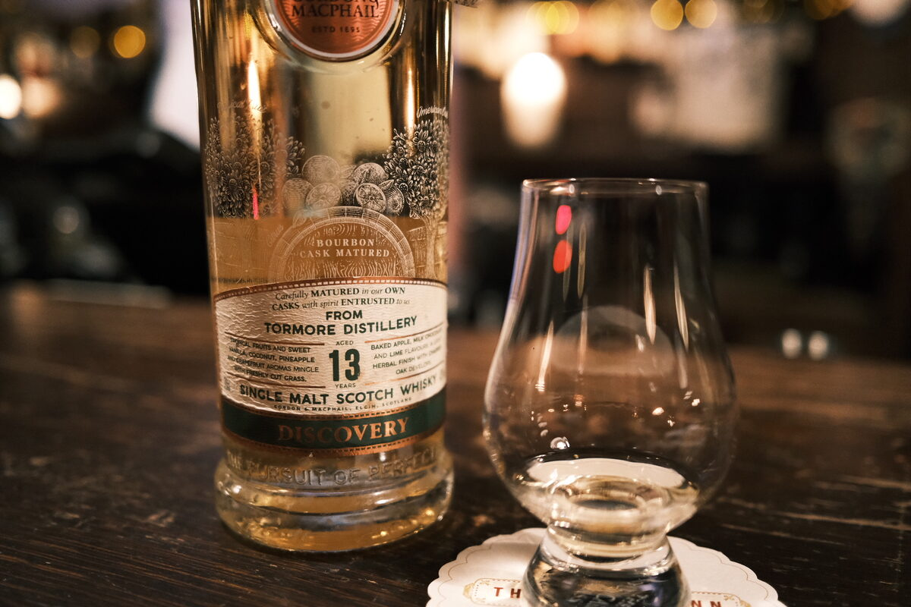

Tormore Gordon & Macphail 13 years 43% (exbourbon)
From the Discovery series, bottled 2018. Can we discover higher ABVs please…
Colour Straw.
Nose Orchard fruits, custard, a bit of wax. Barley, malt, grain forward. Vanilla and a bit of oak. With water, stewed orchard fruits. A bit yeasty. Milk bottles.
Palate Creamy mouthfeel, vanilla custard, orchard fruits, malty. Lime. Boiled sweets, strawberry liquorice. A drop of olive oil. With water, a bit spicier.
Finish Malty. Menthol and eucalyptus. Boiled sweets, perhaps cola? With water, more grain. Vanilla custard. Long (especially the custard), a little warming.
Comments Grain forward, really nice exbourbon malt. A lot of character, I think. Even given the ABV! 87/100.

Posted by Dominic on 15 Jun 2021